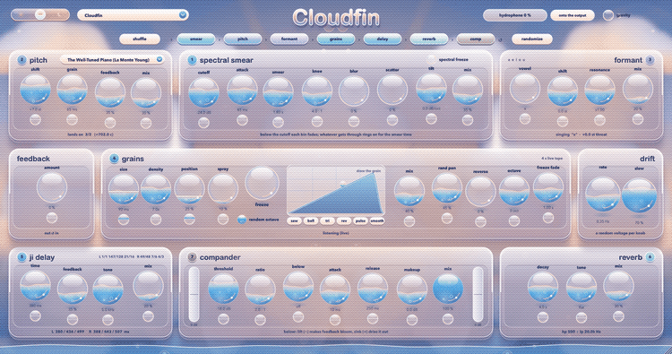
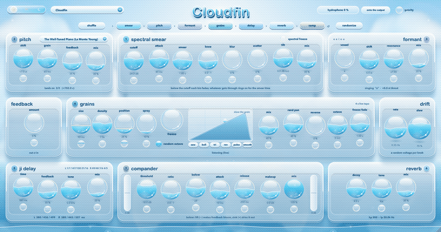
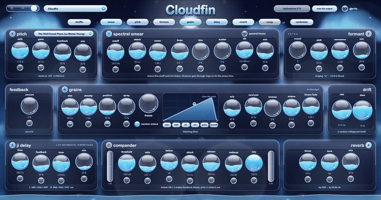
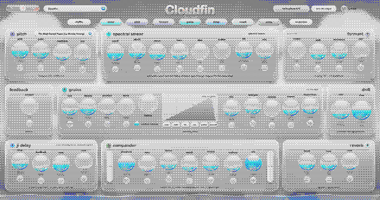
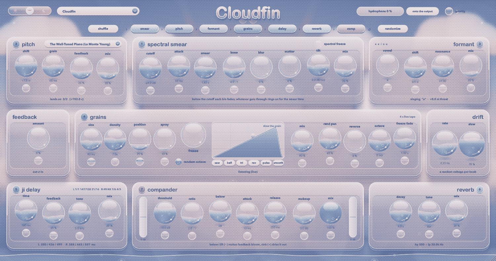
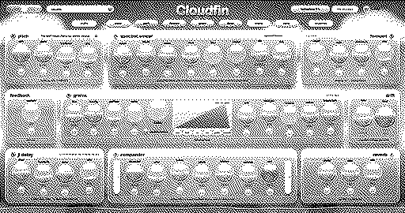
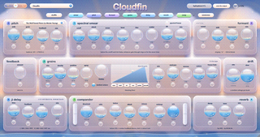

These are made from today's real Cloudfin window (the symmetric clouds-and-water one), reduced the way a 90s screen would show it. Nothing is redrawn: same layout, same bubbles, fewer pixels and fewer colours. In the plug-in this would be a last step that shrinks and dithers every frame, so everything still moves.
750 pixels wide (each pixel doubled), 256 colours picked from the picture, ordered dither. The gentlest: reads as a mid-90s multimedia CD-ROM. Good at: keeps the mood and nearly all the detail; small labels are soft but readable. Costs: the least "retro" of the five.


day
dusk

night
640 wide, the fixed 16-colour VGA palette, 4 x 4 ordered dither. Every gradient becomes a checker pattern; the sky turns to cyan, grey and magenta weave. Good at: the strongest period feel. Costs: the dusk colours are approximated from a palette that has no peach or lilac, and small labels would need redrawing in a bitmap font to stay readable.

No loss of resolution: only the colours are cut to 16 (picked from the picture) with an 8 x 8 ordered dither. Text and edges stay crisp while every soft gradient turns into a fine printed-looking screen. Good at: fully usable, nothing gets harder to read. Costs: less "low-res", more "newsprint"; the dither is very fine on a Retina screen.

512 wide, two colours, Atkinson dither (the early Macintosh look). Good at: striking, and the bubbles' water levels still read. Costs: no colour at all, so day, dusk and night differ only in brightness, and this kind of dither shimmers when things move (an ordered pattern would be used for the moving parts).

320 x 169, 32 levels per colour channel with a dither, like a first PlayStation. Good at: big chunky pixels, colours stay true. Costs: at this size the labels are gone; they would have to be drawn afterwards in a pixel font, and fine controls like the grain shape box get coarse.

How it would be built: the window is drawn as now into a small off-screen picture, then each pixel is snapped to the palette with an ordered dither and scaled up without smoothing. That is cheap (well under a millisecond at these sizes) and could be a switch beside day / dusk / night, so the current look stays available. For B, D and E the labels and values would be drawn after the dither, in a pixel font, so they stay sharp.